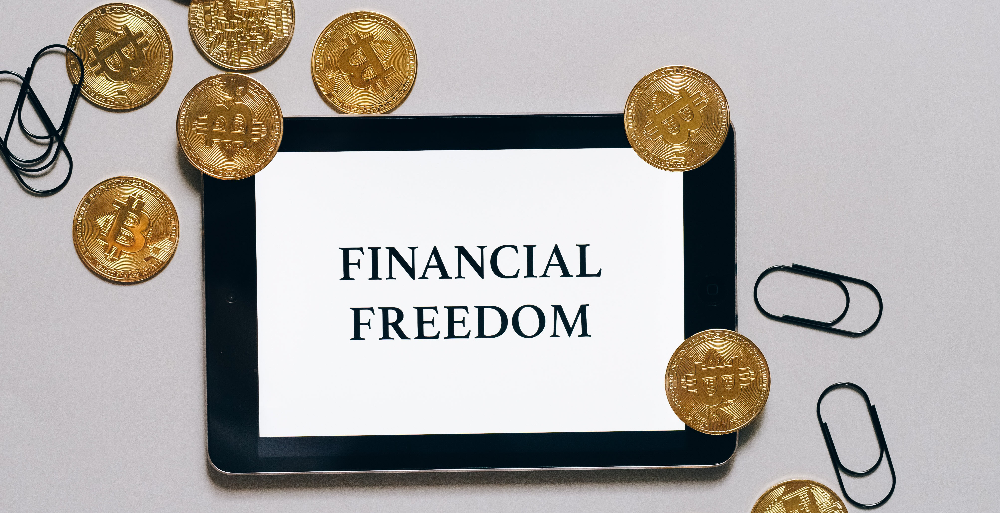

Crypto & Web3
Bitcoin is the first ever cryptocurrency. Its white paper was published on October 31, 2008 by an unknown entity, nicknamed as Satoshi Nakamoto.
Disclaimer: Did you come here for financial advice? Well, you are not going to find it here. TechWriters.eu does not offer any financial advice whatsoever and never will.
It breaks our hearts that as late as towards the end of 2023, there are still people who openly question the motivation for crypto; or openly label it "a scam".
So, while we are well aware that there is a long way to go, let us make it clear why we at TechWriters.eu have a stance on crypto: financial freedom achieved through advancement of technology.
What is a crypto currency?
Cryptocurrencies are a form of digital currencies that use blockchain technology.
A "reliable" cryptocurrency project must clearly meet several criteria:
There are other characteristics and the discussion is long. Like, really long. The key take-away here is that these criteria are the pillars of the concept of a truly decentralized financial model: which is intended to guarantee financial freedom of the network users.
Satoshi's whitepaper opened the door to the concept of digital financial freedom.
Because 3 > 2 so it's better, duuh?
Seriously, the idea of a decentralized internet effectively means that no one owns the Internet, uhm, technically speaking. Some would argue that the current Internet belongs to no one but in truth, a few tech corporations own the largest chunk of all web activity.
Web3 is a natural step for cryptocurrencies to escape regulatory shutdown on the network level.
This is the conceptual part so just submerge yourself into it.
The TL;DR is that it is based on a blockchain model, much similar to crypto and NFTs but all websites and apps run on top and you can even earn some cash, even end users. ISPs responsibilities would be distributed across the nodes that operate the blockchain, which is natively hooked to the application layer. Thus exchange of data is attached to transactions and this adds incentivization to Web3. So, it is again servers and services but operations and payload are all paid for depending on the tokenomics model.
The end users would essentially have experience, similar to Web2: they will be use web apps and access websites in a similar way. Depending on economics models in these apps, some users would be able to monetize on Web3.
First of all, the idea of crypto itself is beyond just a cryptocurrency already. The success of long-term cryptocurrencies usually lies in the tokenomics models and development of the crypto protocols' capabilities.
So back to the question: ideally, all the protocols that operate Web3 networks will seamlessly interact with one another to form the ecosystem of Web3. There is a lot to happen and we probably don't even know a huge chunk of what technology will achieve.
It is not the subject of this article to name specific projects, so we won't.
The tools listed are just for references. This list is not comprehensive or complete in ay way.
Disclaimer: TechWriters.eu is in no way associated with any of the projects listed herein. In no way do we recommend or endorse any of these tools over others. Basically, this is a selection of the list composed by the guys at CoinBureau.
These tools are well-known within the community.
CoinGecko is one of the most popular market price and market cap aggregators.
In time, TechWriters.eu will offer a blog portal with a dedicated crypto section in there.
We love technical content. We author technical documentation from scratch and we also update and improve existing docs.